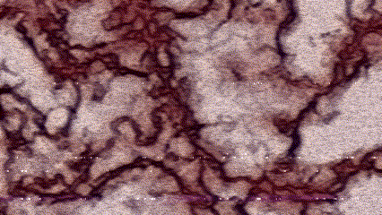
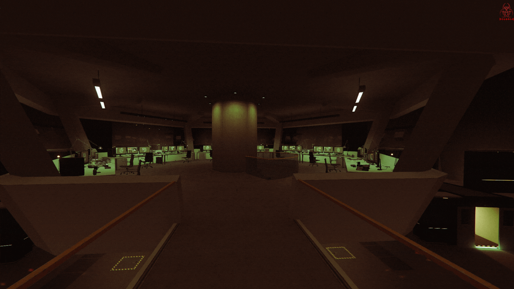

Investigación
N-Z
N-Z
La investigación sobre el virus N-Z, llevada a cabo en el Instituto [D-E-L-U-X-I-A], se enfoca en el desarrollo de tratamientos y estrategias para enfrentar esta infección devastadora transmitida por la sangre. El virus N-Z, creado originalmente por Humane Labs & Research, se ha convertido en una amenaza global tras su liberación en 2031. Desde entonces, el Instituto [D-E-L-U-X-I-A] se ha dedicado a entender sus mecanismos y encontrar una cura.
Nuestro equipo de científicos utiliza análisis avanzados de muestras de sangre y técnicas moleculares de vanguardia para identificar el patógeno responsable del virus N-Z. El objetivo es descifrar su mecanismo de acción y desarrollar estrategias efectivas para el diagnóstico y tratamiento. Además, nuestra investigación busca aportar soluciones innovadoras para combatir esta enfermedad, contribuyendo al desarrollo de nuevos tratamientos y métodos de prevención que podrían ser cruciales para la supervivencia de la humanidad.

Organización [D-E-L-U-X-I-A]
Laboratorio secreto — Faro de El Gordo
Laboratorio secreto — Faro de El Gordo
Header
0 CIVILES MUERTOS üíÄ
0 ZOMBIS DETECTADOS ☢️
![[D-E-L-U-X-I-A]](assets/images/Logosinfondo.png)